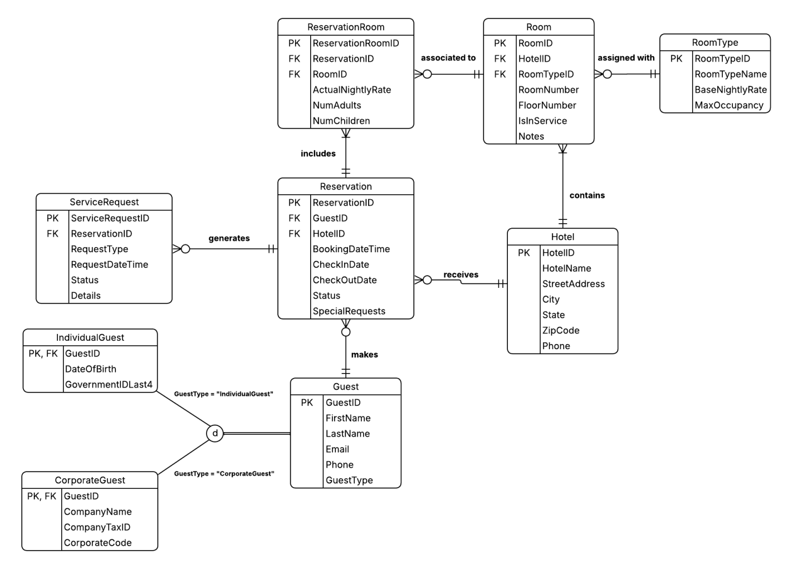
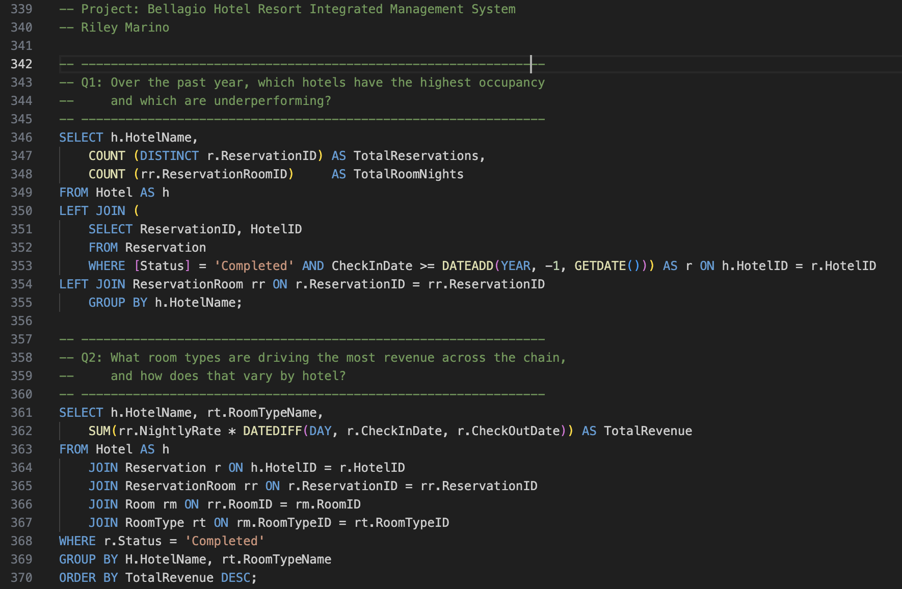

SQL Developer · BUS 393 · Winter 2026
Bellagio Hotel Resort Integrated Management System
One guest books two rooms for three nights. That’s one reservation, two room assignments, and six room-nights. Which number belongs in a manager’s report?
For BHR-IMS, a four-person class project, we designed a relational database for a fictional hotel chain. Our goal was to connect reservations, room inventory, guests, and service requests so a manager could answer questions across properties. I was the SQL developer. I used Visual Studio as my IDE to work on the Transact-SQL that turned the team’s design into tables and reports.
Modeling a Stay
Our midterm design started with six management questions and a data dictionary. The decision that mattered most was where to store a booked room. A reservation can cover several rooms, and the same room can appear on many reservations over time. We connected them with ReservationRoom, a table with one row for each room assigned to a booking.

That choice gave each price a clear home. RoomType holds the base rate for a category. ReservationRoom holds the agreed nightly rate for that particular room and stay. A revenue report can therefore use the price attached to the booking even if the advertised rate changes later.
Turning Business Rules Into SQL
The final script creates nine tables, inserts sample records, and defines six reporting queries. Primary keys identify individual records. Foreign keys connect them: a room references its hotel and room type, and a service request references the reservation that generated it. Individual and corporate guests share a guest record, with separate tables for the details specific to each type.
Writing the constraints helped me distinguish an ID from a business rule. A unique RoomID identifies a room anywhere in the chain. UNIQUE (HotelID, RoomNumber) also prevents two rooms at one property from being entered as “201,” while allowing room 201 at another hotel. A separate CHECK requires checkout to fall after check-in.
From Five Tables to One Revenue Figure
To compare room revenue, I followed the relationships from hotel to reservation, room assignment, physical room, and room type. I filtered to completed stays, multiplied each assigned room’s booked rate by the length of the stay, then summed the amounts by property and room type.

| Mock property | Room type | Revenue |
|---|---|---|
| Bellagio Las Vegas | Penthouse | $15,150 |
| Bellagio New York | Suite | $8,220 |
| Bellagio Miami | Penthouse | $4,080 |
In our sample records, Las Vegas penthouses generated the highest total. The grouping matters: combining every suite and penthouse across the chain would hide which property contributed the revenue.
Choosing What to Count
Repeat guests. To identify guests with at least three completed stays, the query filters reservations by status, groups by guest, and applies HAVING COUNT(...) >= 3. The earliest and latest check-in dates give the count context. Joining room assignments here would risk counting a guest’s two-room trip twice.
Group bookings. A subquery groups room assignments by reservation and keeps bookings with more than one room. The outer query counts distinct reservations and guests by hotel. Here, joining room assignments is essential because the number of rooms defines the question.
Occupancy and service demand. Our final occupancy query measures the share of a property’s rooms used at least once in the reporting period. A manager asking how full the hotel was over time needs occupied room-nights divided by available room-nights. The service report has a similar limit: because requests belong to a reservation, a request on a multi-room stay cannot be attributed to one specific room without more information.
What I Learned
I learned to write down what one row means before choosing a join or an aggregate. That habit explains why I count reservations for loyalty, room assignments for group bookings, and nights multiplied by booked rates for revenue. It also helps me tell a stakeholder when a new question needs another field in the database. For this project, adding a room reference to a maintenance request would make a room-level repair report much more useful.
Back to Technical Projects